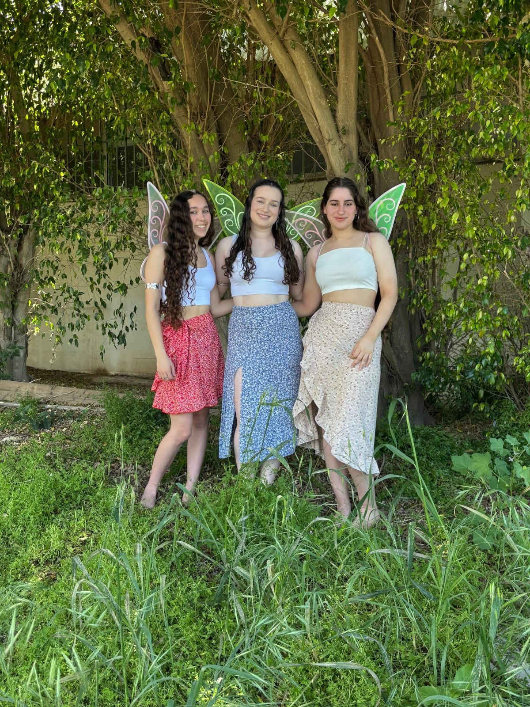

אחרי שלוש שנים (אפילו עוד קצת לפני), הגיע הרגע להגיד לך תודה מכל הלב.
תודה על שלוש שנים של השקעה אמיתית, בלי הפסקה. על זה שלא ויתרת על אף אחת מאיתנו, גם כשאנחנו כבר כמעט ויתרנו על עצמנו.
תודה על השיחות האישיות, על הריכולים, על הבדיחות שתמיד הגיעו בדיוק כשכבר היינו על סף שבירה ומיואשות.
תודה על זה שתמיד מצאת את הדרך להסביר לנו גם את החומר הכי מסובך בצורה כל כך פשוטה ומובנת. וגם אם לא הבנו בפעם הראשונה, הסברת שוב ושוב, ולפעמים גם בפעם החמישית, בלי להתעצבן ובלי להתייאש.
תודה על הסבלנות לענות על שאלות שגם ה־ChatGPT היה מרים ידיים.
תודה על הדאגה האמיתית שלך אלינו לא רק בלמידה, אלא גם ביום יום. קלמנטינות, תפוחים, קוסקוס.
תודה על הימי גיבוש המטורפים שארגנת לנו והסתרת לאן הולכים (למרות שגילינו לאן הולכים כבר לפני) נהנינו שם ברמות וזה גיבש ואיחד אותנו אפילו יותר.
תודה על זה שלא היית רק מורה, אתה היית הרבה יותר מזה: מישהו שאפשר לסמוך עליו, להתייעץ איתו ושיקשיב לנו ולכל החפירות שלנו בלימודים ובכללי בחיים (זו פרקש סליחה אהוד על החפירות על זה שהלכתי לאיבוד, על העבודה ועל מה ללבוש לימי גיבוש, סיכמנו על טייץ לא?).
תודה על כל השיחות האישיות, על העזרה במיונים לצבא, על ההסברים, העצות והליווי גם בדברים שלא קשורים ישירות ללימודים.
תודה על כל הפעמים ששיחררת אותנו הביתה מוקדם (ותאמין לנו זה עזר לנו ממש להשלים שעות שינה).
תודה על היכולת שלך לעצור הכול כשצריך, לשבת, לדבר, ולהיות שם בשבילנו גם בדברים שמעבר לשיעור.
אתה לימדת אותנו הרבה יותר מסתם תכנות. בזכותך למדנו איך להתמודד עם אתגרים, איך לא לפחד לטעות, איך לדעת לתקן ולנהל נכון לוח זמנים (חלקנו לפחות). למדנו שלפעמים דווקא כשמשהו לא עובד זאת ההזדמנות הכי טובה ללמוד משהו חדש. למדנו לקחת אחריות, להיות עצמאיות, אבל גם לדעת מתי לבקש עזרה ולעזור גם לאחרים.
ועכשיו, כשאנחנו מסיימות את התיכון ומתחילות פרק חדש בצבא אנחנו עוזבות עם הרבה ידע, אבל גם עם הרבה חוויות, זיכרונות, בדיחות פרטיות והמון הערכה אליך.
לא יכולנו לבקש מורה טוב יותר ללוות אותנו בשלוש השנים האחרונות. ולמען האמת אנחנו בטוחות שגם שניזכר בלימודים בעוד כמה שנים השם שלך יהיה הראשון שיעלה לנו בראש, עם חיוך גדול וגעגוע.
אז תודה על הכל, תודה על מי שהיית בשבילנו, על כל מה שלימדת, על כל מה שהענקת לנו, על הדרך, ההשקעה, הסבלנות והלב הגדול.
